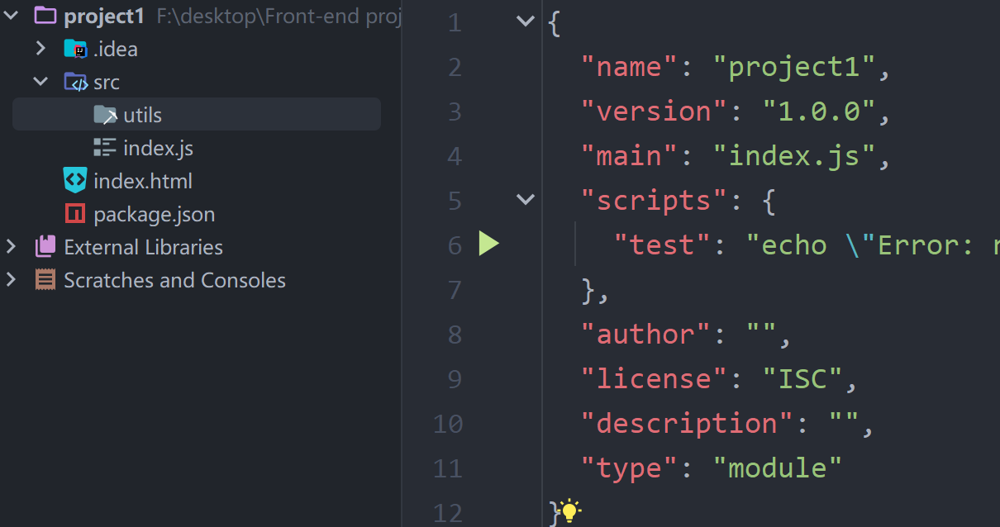

模块化
模块化
概述
模块化是指将一个复杂程序划分为一系列独立、可互操作的模块的过程。每个模块负责特定的功能或任务，并通过定义好的接口与其他模块进行通信。简单来说, 就是将代码进行分解、按功能进行管理。
模块化的目的是提高代码的可维护性、可重用性、可测试性和可扩展性。开发者能够更容易地处理大型JavaScript项目。
目录结构
默认导出和导入
1 | min.js |
注意：
export default在同一个模块中只能使用一次- 默认导入的变量名可以随便起，一般建议和模块功能保存一致。
按需导出和导入
按照导入的变量必须要用花括号括起来，并且变量名和导出名必须保持一致。
1 | math.js |
1 | PS F:\desktop\Front-end project\project1> node src/index.js |
本博客所有文章除特别声明外，均采用 CC BY-NC-SA 4.0 许可协议。转载请注明来源 MyAKDreamのBlog！
相关推荐

2025-04-25
解构赋值
解构赋值概述目标：数组或者对象作用：让数组或对象的取值更便捷 数组解构1234567const arr = [11, 22, 33]// let a = arr[0]// let b = arr[1]// let c = arr[2]let [a, b, c] = arrconsole.log(a, b, c) {: height=75%, width=75%} 123456const arr = [11, 22, 33]let [, b, c] = arrconsole.log(b, c)let [a, , d] = arrconsole.log(a, d) {: height=75%, width=75%} 123const arr = [1, [2, 3], 4]let [a, [b, ], d] = arrconsole.log(a, b, d) {: height=75%, width=75%} 对象解构传统方法： 1234567891011const obj = { name:...
2025-04-25
函数
函数有名函数12function fn(a, b) { return a + b }console.log(fn(1, 2)) 函数表达式12const fn2 = function (a, b) { return a * b}console.log(fn2(1, 2)) 箭头函数12const add = (a, b) => { return a + b }console.log(add(1, 2)) 特性参数只有一个时，可以省略() 1234567const log = arg => { console.log(arg)}log(666)log('223423') 当函数体只有一句话时，可以省略{}，此时箭头函数自带返回值功能 12const add = (a, b) => a + bconsole.log(add(1, 2)) 当返回一个对象时，为了简写，需要给对象加() 简写前： 12345678910111213const state...
2025-04-25
序列号和反序列化
序列号和反序列化概述在 JavaScript 中，序列化和反序列化是指将对象转换为 JSON 字符串（序列化）和将 JSON 字符串转换回对象（反序列化）的过程。JavaScript 提供了内置的 JSON 对象来处理这些操作。 序列化（Serialization）序列化是将 JavaScript 对象转换为 JSON 字符串的过程。你可以使用 JSON.stringify() 方法来实现这一点。 12345678const obj = { name: "Alice", age: 30, city: "New York"};const jsonString = JSON.stringify(obj);console.log(jsonString); // 输出: {"name":"Alice","age":30,"city":"New...
2025-04-25
扩展运算符
扩展运算符概述在JavaScript中，扩展运算符（Spread operator）是一种方便的语法，它允许一个表达式在某些地方展开成多个元素（对于数组）或多个键值对（对于对象）。扩展运算符使用三个连续的点（...）来表示。 用途数组中的扩展运算符在数组中，扩展运算符可以将一个数组展开成其包含的元素，并将这些元素插入到另一个数组中，或者用于函数调用时传递数组元素作为单独的参数。 合并数组 1234const arr1 = [1, 2];const arr2 = [3, 4];const combined = [...arr1, ...arr2];console.log(combined); // 输出: [1, 2, 3, 4] 函数调用时传递数组元素 12345function sum(a, b, c) { return a + b + c;}const numbers = [1, 2, 3];console.log(sum(...numbers)); // 输出: 6 复制数组 12345const arr1 = [11, 22,...
2025-04-25
Async和Await
Async和Await概述在JavaScript中，async 和 await 是用于处理异步操作的关键字，它们提供了一种更简洁和易于理解的方式来编写异步代码。与传统的回调函数和Promise相比，async 和 await 使异步代码看起来更像是同步代码，从而提高了代码的可读性和维护性。 async 关键字async 关键字用于声明一个异步函数。这个函数会隐式地返回一个Promise对象。即使你没有在函数内部显式地返回一个Promise，JavaScript引擎也会自动将函数的返回值包装成一个Promise。 123async function myAsyncFunction() { // 这里可以包含同步和异步操作} await 关键字await...
2025-04-25
变量和常量
变量和常量概述变量可以重新赋值，而常量不可以 12345678910111213// 变量let name = 'Jack'let age = 18name = 'ycq'age = 20// 常量const PI = 3.14const articleList = []const user = { name: 'vue3', age: 9} 思考 const 声明的数组可以添加或删除吗 const 声明的对象可以添加或者修改吗 可以的，因为数组和对象在JS中属于引用类型，对其做添加、删除等操作，并不改变内存地址。本质上就是修改指针指向的空间。